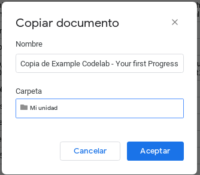
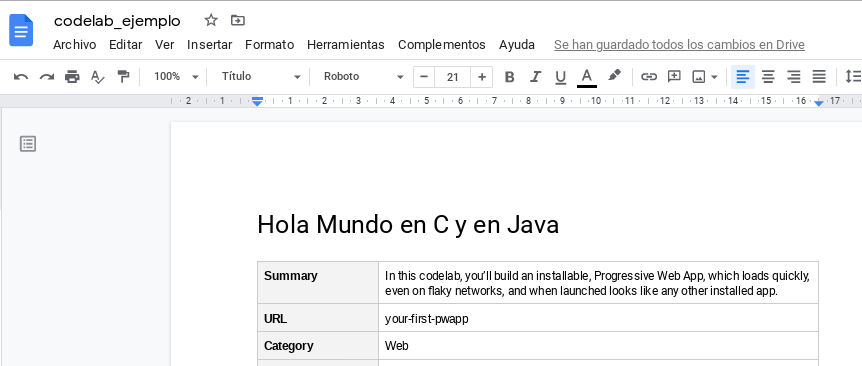
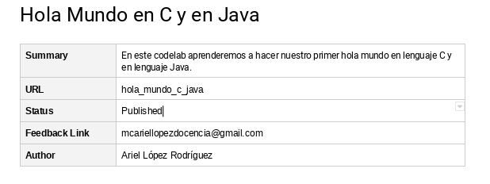
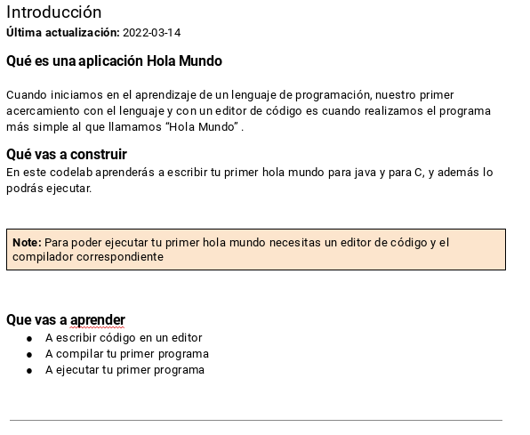
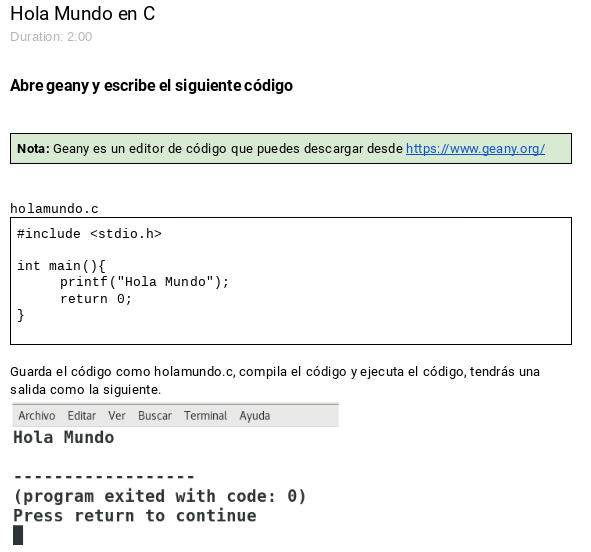
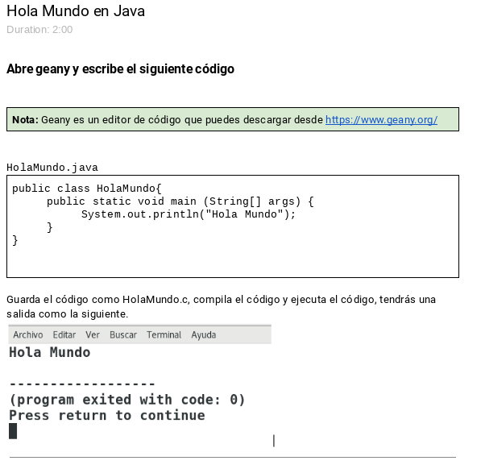
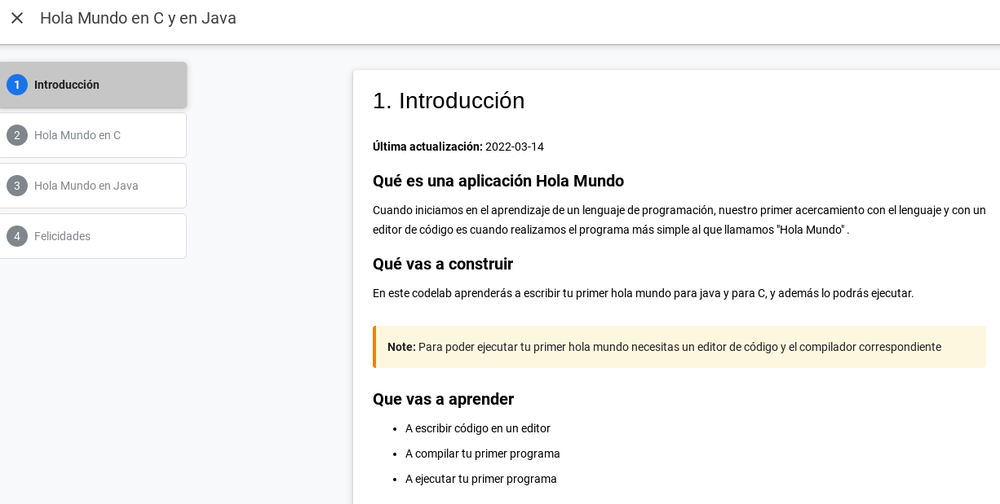
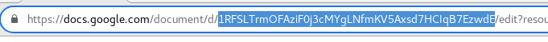

Los codelab son tutoriales creados para la enseñanza de distintos lenguajes de programación. Ejemplos de estos codelabs los podemos encontrar en https://codelabs.developers.google.com/ . El formato de presentación de estos tutoriales permiten al usuario seguir las instrucciones de manera más fluida y menos tediosa.
Google nos proporciona las herramientas de creación para que nosotros podamos crear nuestros propios tutoriales en el mismo formato en que ellos lo realizan, los tutoriales obtenidos los podemos publicar en nuestros propios servidores, utilizar servicios gratuitos de hospedaje en la web o en un servicio de hospedaje de pago.
Que haremos en este tutorial
En este tutorial crearemos nuestro primer codelab (Observa el resultado final) usando una plantilla de documento que nos proporciona google, y las herramientas necesarias para la generación de nuestro codelab.
Que aprenderás
Las herramientas necesarias para crear nuestro codelab
Cómo escribir nuestro codelab usando una plantilla de google doc.
Cómo generar y visualizar nuestro codelab.
Qué vamos a necesitar
Una cuenta de gmail
Conocimiento del manejo de la terminal o línea de comandos
Crea una copia de la plantilla de google para la creación de codelabs
Vamos al menú archivo y seleccionamos la opción Hacer una copia

Colocamos un nombre a nuestro documento e indicamos la ubicación donde guardaremos nuestro documento.
Asignar el nombre de nuestro tutorial.

Vamos a modificar la información de nuestro codelab, para ello vamos a modificar los metadatos que se encuentran en la tabla debajo del título de nuestro tutorial.
Para efectos de este tutorial solo dejaremos los valores básicos.
Summary: Un breve resumen de lo que aprenderemos o haremos en este codelab
URL: un nombre que indique de qué trata el codelab, este nombre será el nombre de la carpeta donde se crearán los archivos de nuestro codelab.
Status: Un valor de la siguiente lista (Draft, Published, Deprecated, Hidden), que indica el estado de nuestro codelab.
Feedback Link: Un enlace a un sitio donde podrían dejarnos comentarios sobre nuestro codelab.
Author : El autor del codelab.

El índice se actualizará de forma automática, así que nos vamos directamente al contenido del documento.
Cada título de nuestro documento se convertirá en una sección de nuestro codelab. Así que podemos agregar o eliminar los títulos que sean necesarios para nuestro codelab.
Después del título, dejaremos el texto Duration, y seguido indicaremos el tiempo aproximado que el alumno tardaría en terminar de realizar las actividades de la sección.
Dejaremos para este ejemplo solo 4 títulos incluyendo la introducción
En la primer parte (Introducción) colocaremos lo siguiente, aunque podemos colocar la información que se considere necesaria para el codelab que estamos creando.

En la segunda sección podemos colocar lo siguiente.

En la tercera sección podemos colocar lo siguiente:

Y en la última sección podemos colocar un mensaje de terminación del tutorial.
Después de instalar la extensión, solo debemos tener abierto nuestro documento y ejecutar la extensión, debemos darle los permisos para que pueda tener acceso a nuestro documento y listo, tendremos la previsualización de nuestro codelab.

Para poder exportar nuestro documento al formato codelab, usaremos la herramienta claat que podemos descargar desde : https://github.com/googlecodelabs/tools/releases, descargamos la versión que necesitamos dependiendo nuestro sistema operativo, en mi caso debian 9, por lo que vamos a descargar "claat-linux-amd64".
Aunque podemos simplemente copiar el archivo claat-linux-amd64 a la carpeta donde vamos a exportar nuestro codelab, también podemos en linux agregar un enlace al PATH para tenerlo disponible desde cualquier punto, en debian agregamos al archivo /etc/.bashrc la siguiente línea.
export PATH=$PATH:/home/user/bin/
Que necesitamos:
Si observamos la URL de nuestro documento que estamos editando en nuestro navegador web y vamos a observar algo similar a : https://docs.google.com/document/d/, seguido de un código formado por números y letras, vamos a copiar ese código.

Abrimos la terminal.
Nos ubicamos en la carpeta donde vamos a crear nuestro codelab. En mi caso voy a usar la carpeta "/Descargas/primercodelab"
$ cd Descargas/primercodelab/
Ahora vamos a exportar nuestro documento con la siguiente orden
$claat-linux-amd64 export 1y8RhX33dkdqFex3GmaOl4GqpBHXHQ191NIXZhSh4OsM
ok hola_mundo_c_java
Nos aparecerá la palabra ok seguido por el nombre que colocamos en los metadatos del inicio del documento, lo que significa que el tutorial ha sido generado con éxito.